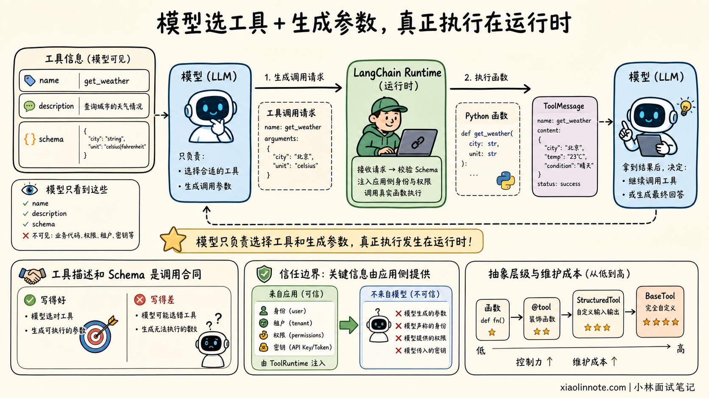
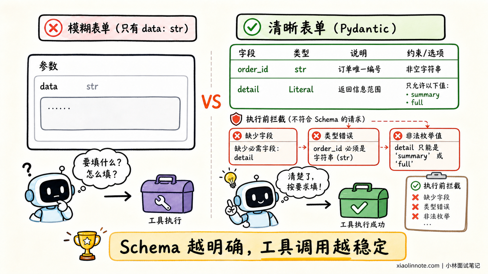
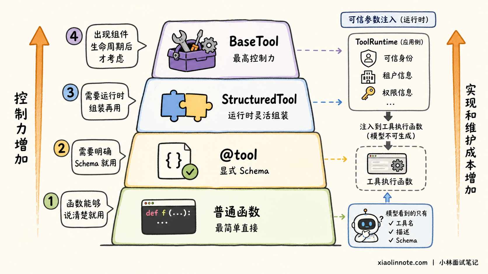
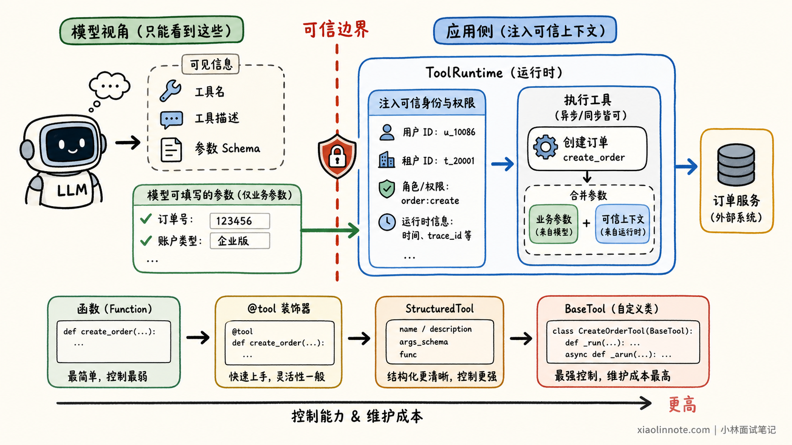

本篇目录
5. 在 LangChain 中，如何为 Agent 注册工具？
👔面试官：在 LangChain 中，怎么给 Agent 注册工具？
🙋♂️我：给函数加一个 @tool，然后放进 Agent 就行。
👔面试官：已有的普通函数能不能直接传？复杂参数怎么校验？什么情况下需要 StructuredTool 或 BaseTool？
🙋♂️我：那就全部继承 BaseTool，这样最规范。
👔面试官：为了查询一次天气也写一个类，只会增加样板代码。用户身份和权限又应该怎么传给工具？
🙋♂️我：让模型生成一个 user_id 参数。
👔面试官：可信身份不能由模型填写，否则既可能填错，也可能被提示注入利用。
理解工具协议，才能根据输入复杂度和工程要求选择合适的 Tool 实现方式。
💡 简要回答
LangChain 中注册 Tool 的本质，是同时向模型提供一份工具说明，并向运行时提供一个真正可执行的函数。工具说明主要包含名称、用途和参数 Schema，模型根据它选择工具并生成参数，LangChain 再执行对应函数。
最常用的实现方式有四种：
- 简单的已有函数，可以带上类型注解和 docstring 后直接放入
tools。 - 大多数业务工具使用
@tool，便于自定义名称、描述和参数 Schema。 - 需要在运行时组装同步函数、异步函数和 Schema 时，可以使用
StructuredTool。 - 工具需要封装客户端、维护资源或定制执行过程时，再继承
BaseTool。
在 LangChain v1 中，通常通过 create_agent(model=..., tools=[...]) 完成注册。城市、关键词、订单号等任务参数可以让模型填写；用户 ID、租户、权限和存储对象等可信参数，应通过 ToolRuntime 从运行时注入，不能暴露给模型。
生产环境还要关注参数校验、权限检查、超时、重试、幂等和错误分类。只有网络超时等临时故障适合自动重试，参数错误和业务拒绝应该返回清楚的信息，程序 Bug 则不应该被统一吞掉。
📝 详细解析
Tool 注册了什么？
模型看不到 Python 函数的源码，那它凭什么知道该调用谁？注册工具时，LangChain 会先把函数转换成一份模型能够理解的说明。
模型首先看到 name 和 description，借此判断工具叫什么、应该在什么情况下使用。决定调用后，它再按照 args_schema 生成满足类型和约束的参数。真正拿着这些参数做事的，则是应用侧的函数或协程，也就是 executor。
模型先生成包含工具名和参数的调用请求，运行时执行函数，再把结果作为 ToolMessage 返回给模型。模型拿到结果后，决定继续调用工具还是生成最终回答。

工具描述和 Schema 是模型与业务代码之间的调用合同。描述过于模糊，模型可能选错工具；参数缺少约束，模型可能生成无法执行的数据。
常用方式怎么选？
日常开发中，没有必要为了显得专业而直接继承最底层的类。选择方式时，可以先问这个工具到底还是不是一个普通函数。
如果已有函数的名称、类型注解和 docstring 已经能把用途说清楚，直接放入 tools 就够了。可一旦我们希望明确修改工具名称、补充参数描述，或者用 Pydantic 限制枚举和范围，普通函数提供的信息就不够，这时 @tool 会成为大多数业务工具的自然选择。
原函数不能修改，或者工具要在运行时动态组装同步与异步实现时，可以使用 StructuredTool。只有当工具需要长期持有客户端、维护资源并定制完整执行过程时，它才从「一个函数」变成「一个组件」，这时再考虑继承 BaseTool 才划算。
这四种方式对应不同的复杂度：先让函数说清楚，再补充工具契约，接着处理动态组装，最后才管理组件生命周期。
模型厂商提供的 Web Search、代码执行器等服务端工具，有时会使用厂商约定的字典配置。这类工具属于特定 Provider 能力，使用时应单独查看对应集成文档，不需要把它当作通用 Python Tool 的主要定义方式。
为什么优先使用 @tool？
@tool 能从函数签名和 docstring 自动推导 Schema，也允许通过 Pydantic 显式描述复杂参数，是大多数业务工具的首选。
from typing import Literal
from langchain.agents import create_agent
from langchain.tools import tool
from pydantic import BaseModel, Field
class OrderQuery(BaseModel):
# Field 描述和类型约束都会进入模型看到的工具 Schema
order_id: str = Field(description="要查询的订单号")
detail: Literal["summary", "full"] = Field(
default="summary",
description="返回摘要还是完整信息",
)
# args_schema 显式指定工具参数的校验模型
@tool(args_schema=OrderQuery)
def query_order(order_id: str, detail: str = "summary") -> str:
"""查询订单状态。用户询问某个订单时调用。"""
return f"订单 {order_id} 的状态为已发货，返回模式：{detail}"
# 注册时把 Tool 放进 create_agent 的 tools 列表
agent = create_agent(
model="openai:gpt-5.4-mini",
tools=[query_order],
)这个例子中，模型只需要决定 order_id 和 detail。Pydantic 的字段描述和枚举限制会进入工具 Schema，既帮助模型正确填写参数，也能在执行前拦截非法输入。

已有的简单函数也可以不加装饰器，直接传给 tools。函数必须有清楚的名称、类型注解和 docstring，否则自动生成的工具说明很难指导模型正确调用。
何时使用高级定义？
StructuredTool.from_function 更适合「原函数不能修改，但需要改变它对模型的呈现方式」的场景。例如，同一个业务函数需要注册成不同名称，或者要把同步函数和异步协程组合成一个工具对象。
什么时候才需要 BaseTool？当工具不再只是一个函数，而是要长期持有数据库或第三方客户端，并同时管理同步、异步、tags、metadata 和回调时，它已经变成了一个有生命周期的组件。此时使用 BaseTool，才值得承担更多样板代码。
选择原则可以概括为：函数能够说清楚就用普通函数，需要明确 Schema 就用 @tool，需要运行时组装再用 StructuredTool，出现组件生命周期后才考虑 BaseTool。

可信参数如何注入？
假设「查询我的账户余额」工具需要用户 ID。如果把 user_id 放进模型可见的 Schema，模型可能填错用户，也可能被恶意提示诱导查询其他账户。
因此，需要区分两类参数：
| 参数类型 | 示例 | 参数来源 |
|---|---|---|
| 任务参数 | 城市、关键词、订单号 | 模型根据用户问题生成 |
| 可信参数 | 用户 ID、租户、权限、当前状态 | 应用运行时注入 |
LangChain v1 使用 ToolRuntime 把这些可信信息送进工具，但不同信息仍有不同作用域。用户身份、租户和依赖属于本次调用上下文，从 runtime.context 读取；当前会话消息和短期状态放在 runtime.state；跨会话仍要保留的长期数据，才进入 runtime.store。
from dataclasses import dataclass
from langchain.tools import ToolRuntime, tool
@dataclass
class UserContext:
# 这些字段由应用运行时提供，不让模型生成
user_id: str
role: str
@tool
def get_balance(
account_type: str,
runtime: ToolRuntime[UserContext],
) -> str:
"""查询当前登录用户的账户余额。"""
# 先使用可信 Context 做权限检查
if runtime.context.role not in {"user", "finance_admin"}:
return "当前用户无权查询余额"
# 用户 ID 来自 Runtime，而不是模型参数
user_id = runtime.context.user_id
return f"用户 {user_id} 的 {account_type} 账户余额为 100 元"模型能够看到并填写 account_type，却看不到 runtime。可信用户身份由应用传入，而不是由模型生成。这是工具权限控制的重要边界。

异步工具怎么处理？
搜索、数据库和远程 API 通常属于 I/O 密集型操作。如果底层客户端支持异步，工具也应使用原生 async def，并通过 Agent 的 ainvoke 或异步流式接口调用。
不要只把函数声明成 async def，内部却继续调用阻塞式 HTTP 客户端；这种写法不会自动提高并发能力。工具是否异步，应该和底层客户端以及整条 Agent 调用链保持一致。
错误应该怎么处理？
工具调用失败时，先别急着统一重试，因为不同失败意味着完全不同的下一步。
如果日期格式错误或缺少必填字段，问题出在模型生成的参数，应先让 Schema 拦截，再把可修正的信息交给模型重新填写。库存不足、没有权限或订单不存在则不是参数格式问题，而是一次正常的业务结果。工具应该把原因说清楚，让 Agent 决定换条路径或直接告知用户。
网络超时、限流和服务暂不可用才属于可以尝试恢复的临时故障。这类错误可以做有上限的重试，但必须同时设置退避和总超时，否则 Agent 只会在一个坏掉的服务前反复等待。
程序 Bug、数据损坏和权限配置错误不应该被统一转换成「调用失败」后继续执行，否则系统会掩盖真正的问题。对于付款、发邮件、创建订单等有副作用的工具，还必须设计幂等键和人工审批，避免重试造成重复执行。
注册后还要检查什么？
Agent 能调用函数只是第一步。检查工具能否安全上线，可以沿着一次真实调用往下走，不用背一张清单。
模型准备调用之前，先看名称和描述是否会与其他工具混淆，Schema 有没有限制枚举、范围和必填字段。这一步决定模型能不能选对工具、填对参数。
请求进入执行阶段后，再确认用户身份和权限来自可信 Runtime，而不是模型参数。远程调用还要有超时、重试上限和并发限制；只要动作会改变外部状态，就继续补上幂等、审批与审计，防止一次恢复或重试变成重复扣款、重复发信。
调用结束也不是安全边界的终点。日志与 Trace 需要帮助排查错误，但不能记录密钥、完整身份凭证或不必要的敏感数据。这样从模型选择、业务执行到事后追踪，工具契约才算真正闭环。
工具数量也不是越多越好。一次性向模型暴露大量相似工具，会增加选择错误和参数混淆的概率。更合理的做法是根据用户权限和当前任务动态缩小工具集合。
🎯 面试总结
先说明 Tool 是「模型可见的调用合同 + 运行时可执行函数」，再讲清楚四种常用定义方式的选择边界。
实际项目中，普通函数和 @tool 能覆盖大多数需求；StructuredTool 用于运行时组装，BaseTool 用于复杂组件。可信身份和权限通过 ToolRuntime 注入，不能交给模型生成。
Schema 校验、异步 I/O、错误分类、幂等和权限治理也不能漏。讲清这些内容，才能说明你理解工具如何安全、稳定地运行在生产环境中。
📚 参考资料
- LangChain 官方文档：Tools
- LangChain 官方文档：Agents
- LangChain API：StructuredTool
- LangChain API：BaseTool
- LangChain 官方文档：Middleware
对了，AI Agent的面试题会在「公众号@小林面试笔记题」持续更新，林友们赶紧关注起来，别错过最新干货哦！